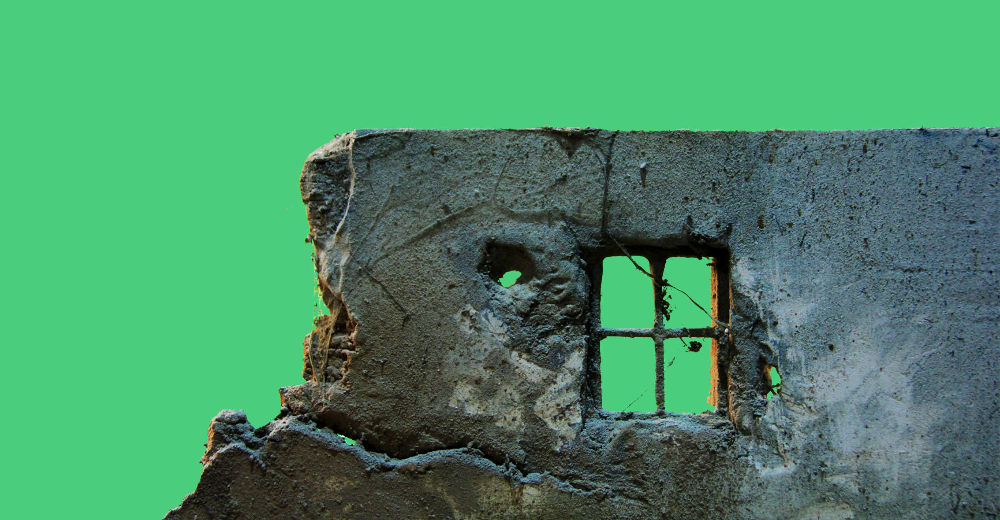

Ekaant: Set Design
Freelance Project
Client
Sarthak Bhasin, Neeraj Singh
Team
Neeraj Singh, Sanjana Danait, Ruchi Lokhande
Role
Assistant Set Designer
Timeline
2 months
Tools
Paper & Pen, AutoCad, Photoshop, Laser Cutting Machine
Methods
Drawing, Material study and exploration, Laser Cutting, Model making
Overview
'Ekaant' (solitude) is a short film made by director Sarthak Bhasin, at the Film and Television Institute of India, Pune.
The Brief
To make a detailed miniature set of an old city, with dilapidated and destroyed buildings, inspired from a city in Syria that was destroyed due to the ongoing unrest.
Process
The short film 'Ekaant' is set in an unspecified time and space, where the film’s protagonist seems to be the only living person
in a completely devastated city. The film was planned to be shot in B&W and since it was crucial for the art direction of the
devastated city to be realistic, the team envisioned building a miniature set of the city, instead of using visual effects.
My role was to research and experiment with a wide variety of materials available, along with my colleague and fellow architecture
student, Ruchi Lokhande. We created samples with materials like MDF, foamboard, filecard and explored finishing materials like
paint, sand and cement. Using the skills learnt in architecture school, we planned the scale of each element and building within
the model while also creating elevation drawings which were then used for laser cutting. From trying innumerable options with
different materials and scales to eventually coming up with the final output, this journey was a very interesting learning experience
and an opportunity to develop and demonstrate immense creativity.


Awards & Recognition
The film was wrapped up and screened in FTII a few months later, and received extensive adulation for the realistic set and art direction. The film later also travelled to various festivals, and won many nominations and awards, the most notable one being: The 66th National Film Award for Art Direction- “For it’s surrealistic design and imagery of a bleak impending catastrophe”. Honored by the Vice President of India at Vigyan Bhavan, Delhi.
To read the Letter of Appreciation by the film's director, please